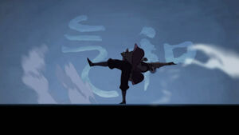
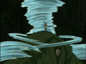
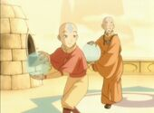
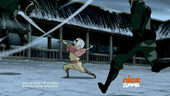
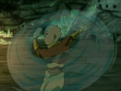
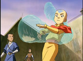
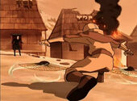
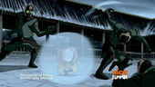

Магия воздуха - одна из четырёх стихийных магий в мире Аватара. Она позволяет контролировать потоки воздуха и управлять ими. Её носителями являются Воздушные кочевники и их потомки. Уникальность магии воздуха в том, что благодаря своей высокой духовности все Воздушные кочевники были магами воздуха. Согласно словам Айро, воздух - это элемент свободы. Ключ к магии воздуха - следование по пути наименьшего сопротивления, уклонение от атаки, а не её отражение.
Воздух
Основы магии воздуха
| Манипулирование потоками воздуха  | Вся магия воздуха основана на создании и манипулировании потоками воздуха. Воздействия на поток воздуха могут превратить его в лёгкий ветер или мощное торнадо. Воздух также можно закручивать, создавая воздушные воронки. |
|---|---|
| Манипуляции температурой воды  | Сжимая воздушные потоки, маг воздуха может создавать из них устойчивые структуры, на которых можно даже стоять, и придавать атакам большую силу. |
Простые приёмы и техники
| Воздушный удар/пинок  | Один из самых простых приёмов, который проводится резкими ударами рук или ног. Эти движения немного напоминают магию огня. Маг воздуха не создаёт большой воздушный поток, а посылает в противника короткие, сжатые струи воздуха. |
|---|---|
| Воздушный щит | Очень распространённый оборонительный приём. Маг воздуха закручивает воздух перед собой, отражая атаку противника. Этот приём почти не используется для прямого блока атаки, и чаще им перенаправляют удар противника. Это занимает меньше сил для создания щита. |
| Воздушная воронка  | По смыслу приём близок воздушным "пулям". Маг воздуха создаёт стационарную воронку, через которую можно выстреливать в противника твёрдыми предметами, например, камнями. |
| Притягивание воздухом | Вместо того, чтобы направлять поток воздуха от себя, маг воздуха делает обратное движение и как бы "присасывает" ближе к себе человека или предмет. Этим приёмом, например, Аанг спас профессора Зея от атаки Ван Ши Тонга в серии «Библиотека». |
| Воздушный самокат | Техника, которую придумал Аанг. Маг создаёт из закрученного воздуха плотный шар, встав на который, можно быстро передвигаться по горизонтальной и вертикальной поверхностям. С увеличением мастерства можно создавать несколько воздушных самокатов, увеличивать размер шара и время его стабильного состояния. |
| Воздушная сфера  | Маг создаёт вокруг себя плотную сферу из воздуха. Техника может применяться как щит, так и для атаки противников, окруживших мага. В серии «Переломный момент» Тензин использовал этот приём, чтобы пройти через коридоры здания, заполненного удушающим газом. |